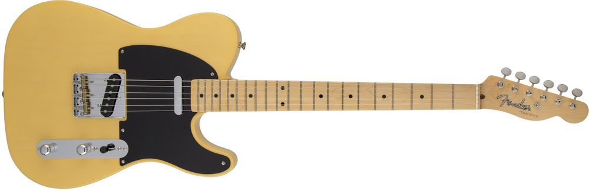

텔레캐스터
펜더 텔레캐스터(Fender Telecaster)는 텔레(Tele 텔리[*])로도 알려진 펜더사의 기타이다. 최초로 상업적인 성공을 거둔 솔리드 바디(Solid body) 전기 기타이다. 단순하면서도 인상깊은 디자인과 혁명적인 사운드는 일렉기타 제조 산업과 대중음악의 트렌드를 이끌었다.1950년 가을 브로드캐스터라는 브랜드로 소개된 텔레는 상당한 규모로 기획된 최초의 기타였으며, 첫 출시 이후 계속 이 형태로 제작되고 있다.[1] 볼트 온 넥(Bolt-on neck, 나사를 이용해 넥과 바디를 접합하는 방식)을 최초로 적용해 출시되었다. 이는 대량 생산을 용이하게 했다. 펜더 스트라토캐스터와 같이 텔레캐스터도 범용성이 높은 기타다. 대부분의 음악에 사용 가능하며 컨트리, 레게, 록, 팝, 포크 소울, R&B, 블루스, 재즈, 펑크, 헤비메탈 등 많은 장르에서 사용되어 왔다. 특히 텔레캐스터는 컨트리, 일렉트릭 블루스, 펑크 락, 락앤롤, 헤비 메탈을 비롯한 다른 대중음악의 발달에서 큰 기여를 했다. 텔레캐스터는 견고한 구조를 가지고 있어 기타리스트가 원하는만큼 긴 서스테인을 유지하면서 리드 기타로서도 손색없는 연주가 가능하다.